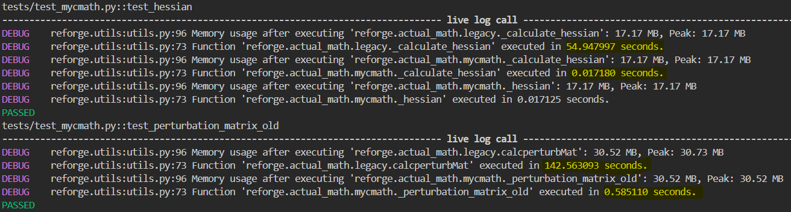

Why use reForge?
Need to simulate a large biomolecular complex? Or many?
Then reForge is the right tool. Pain-free setup of Martini+CG Protein/RNA/Lipid complexes

Kind of like here (https://www.nature.com/articles/s41467-024-53098-4)
Python-based
Everything is included and python-based.
** Just one python (actually two) scripts is all you need:** Need to run tens or hundreds of MD simulations and analyse them? reForge can do it! And with the press of just one button.
Accelerated C- and CUDA routines
Process terabytes of data like WHOOOOSH:
Just look at this massive performance gain compared to standard Python and NumPy.
And this is for a medium sized system of only ~1000 residues. Imagine doing hundreds or thousands of these.
{kind=link}
Tools to develop your own models
Make your own models and use already developed MD engines and analysis tools

For new users
Tutorials: Tutorials and examples of basic workflows are provided in the package.
Acknowledgements
The reForge package is maintained by [Your Name or Your Organization]. This project is inspired by and builds upon multiple excellent open-source packages such as Cython, NumPy, CuPy, GROMACS, OpenMM, Vermouth and MDAnalysis.